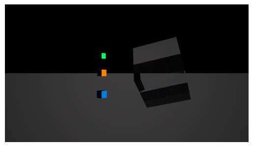
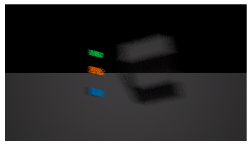
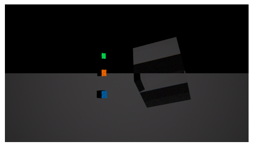
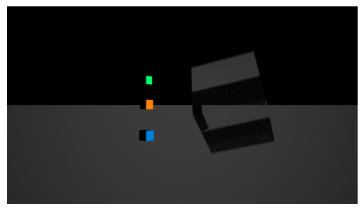

Download this example
Download this example as a Jupyter Notebook or as a Python script. All assets used in the examples can be downloaded as a ZIP archive.
How to use timeline#
This tutorial demonstrates how to use timeline.
What is a timeline?#
Timeline allows to have properties of some features evolving over time. For example, a camera feature, a lightbox feature can move according to a trajectory. Also, the flux of a surface source can vary over time. The timeline is activated at the simulation level, and then the features that have timeline data will be taken into account during the simulation compute.
Prerequisites#
Perform imports#
[1]:
import os
from pathlib import Path
from ansys.speos.core import Project, Speos, launcher
from ansys.speos.core.component import LightBox
from ansys.speos.core.generic.version_checker import server_version_checker
from ansys.speos.core.kernel.client import default_docker_channel
from ansys.speos.core.sensor import SensorCamera
from ansys.speos.core.simulation import SimulationInverse
from ansys.speos.core.source import SourceSurface
Define constants#
The constants help ensure consistency and avoid repetition throughout the example.
[2]:
HOSTNAME = "localhost"
GRPC_PORT = 50098 # Be sure the Speos GRPC Server has been started on this port.
USE_DOCKER = True # Set to False if you're running this example locally as a Notebook.
Model Setup#
Load assets#
The assets used to run this example are available in the PySpeos repository on GitHub.
Note: Make sure you have downloaded simulation assets and set
assets_data_pathto point to the assets folder.
[3]:
if USE_DOCKER: # Running on the remote server.
assets_data_path = Path("/app") / "assets"
else:
assets_data_path = Path("/path/to/your/download/assets/directory")
Connect to the RPC Server#
This Python client connects to a server where the Speos engine is running as a service. In this example, the server and client are the same machine. The launch_local_speos_rpc_method can be used to start a local instance of the service..
[4]:
if USE_DOCKER:
speos = Speos(channel=default_docker_channel(port=GRPC_PORT))
else:
speos = launcher.launch_local_speos_rpc_server(port=GRPC_PORT)
/home/runner/work/pyspeos/pyspeos/.venv/lib/python3.14/site-packages/ansys/tools/common/cyberchannel.py:201: UserWarning: Starting gRPC client without TLS on localhost:50098. This is INSECURE. Consider using a secure connection.
warn(f"Starting gRPC client without TLS on {target}. This is INSECURE. Consider using a secure connection.")
Create a project from file#
Create a project by loading a .speos file. This project will be then modified to see how timeline can be activated on different features, and how it impacts the simulation results.
[5]:
p = Project(speos=speos, path=assets_data_path / "TimelineExample.speos" / "TimelineExample.speos")
p.preview()
Timeline activation and results#
Timeline not activated on the simulation#
Let’s just retrieve the simulation feature and compute it without activating timeline, to have a baseline result to compare with.
[6]:
simu_feat: SimulationInverse = p.find(name=".*", name_regex=True, feature_type=SimulationInverse)[0]
simu_feat.stop_condition_passes_number = 5
simu_feat.commit()
[6]:
<ansys.speos.core.simulation.SimulationInverse at 0x7fc33a97cad0>
[7]:
# Compute and display the result.
simu_feat.compute_CPU()
# Method available only on Windows OS or with Speos 2026 R1.2 or higher,
# which supports opening XMP results as images regardless of the OS.
if os.name == "nt" or server_version_checker.is_version_supported(2026, 1, 2):
from ansys.speos.core.workflow.open_result import open_result_image
open_result_image(simulation_feature=simu_feat, result_name="Inverse.1.Camera.1.Irradiance.xmp")

Timeline activated on the simulation but no timeline data in the features#
Now, let’s activate timeline on the simulation feature, but without having any timeline data in the features. We should get the same result as before.
[8]:
simu_feat.timeline = True
simu_feat.commit()
[8]:
<ansys.speos.core.simulation.SimulationInverse at 0x7fc33a97cad0>
[9]:
# Compute and display the result.
simu_feat.compute_CPU()
# Method available only on Windows OS or with Speos 2026 R1.2 or higher,
# which supports opening XMP results as images regardless of the OS.
if os.name == "nt" or server_version_checker.is_version_supported(2026, 1, 2):
from ansys.speos.core.workflow.open_result import open_result_image
open_result_image(simulation_feature=simu_feat, result_name="Inverse.1.Camera.1.Exposure.xmp")
Timeline on camera feature#
Let’s activate timeline on the camera feature by setting a trajectory file.
[10]:
camera_feat: SensorCamera = p.find(name=".*", name_regex=True, feature_type=SensorCamera)[0]
camera_feat.photometric.trajectory_file_uri = (
assets_data_path / "TimelineExample.speos" / "CameraTrajectory.json"
)
camera_feat.commit()
[10]:
<ansys.speos.core.sensor.SensorCamera at 0x7fc338914ad0>
[11]:
# Compute and display the result.
simu_feat.compute_CPU()
# Method available only on Windows OS or with Speos 2026 R1.2 or higher,
# which supports opening XMP results as images regardless of the OS.
if os.name == "nt" or server_version_checker.is_version_supported(2026, 1, 2):
from ansys.speos.core.workflow.open_result import open_result_image
open_result_image(simulation_feature=simu_feat, result_name="Inverse.1.Camera.1.Exposure.xmp")

[12]:
# Deactivate timeline for camera feature (not to pollute next results)
camera_feat.photometric.trajectory_file_uri = ""
camera_feat.commit()
[12]:
<ansys.speos.core.sensor.SensorCamera at 0x7fc338914ad0>
Timeline on surface source features#
Let’s activate timeline on the surface source features by setting a flux variation file. Same json but different relative lag for each source feature (0, 33, 66).
[13]:
i = 0
for source_feat in p.find(name=".*", name_regex=True, feature_type=SourceSurface):
source_feat: SourceSurface
source_feat.flux_variation_file_uri = (
assets_data_path / "TimelineExample.speos" / "flux_variation.json"
)
source_feat.relative_lag = i * 100 / 3
source_feat.commit()
i = i + 1
[14]:
# Compute and display the result.
simu_feat.compute_CPU()
# Method available only on Windows OS or with Speos 2026 R1.2 or higher,
# which supports opening XMP results as images regardless of the OS.
if os.name == "nt" or server_version_checker.is_version_supported(2026, 1, 2):
from ansys.speos.core.workflow.open_result import open_result_image
open_result_image(simulation_feature=simu_feat, result_name="Inverse.1.Camera.1.Exposure.xmp")

[15]:
# Deactivate timeline for surface source features (not to pollute next results)
for source_feat in p.find(name=".*", name_regex=True, feature_type=SourceSurface):
source_feat: SourceSurface
source_feat.flux_variation_file_uri = ""
source_feat.commit()
Timeline on light box feature#
Let’s activate timeline on the light box feature by setting a trajectory file.
[16]:
lb_feat: LightBox = p.find(name=".*", name_regex=True, feature_type=LightBox)[0]
lb_feat.trajectory_file_uri = assets_data_path / "TimelineExample.speos" / "LightBoxTrajectory.json"
lb_feat.commit()
[16]:
<ansys.speos.core.component.LightBox at 0x7fc338914c20>
[17]:
# Compute and display the result.
simu_feat.compute_CPU()
# Method available only on Windows OS or with Speos 2026 R1.2 or higher,
# which supports opening XMP results as images regardless of the OS.
if os.name == "nt" or server_version_checker.is_version_supported(2026, 1, 2):
from ansys.speos.core.workflow.open_result import open_result_image
open_result_image(simulation_feature=simu_feat, result_name="Inverse.1.Camera.1.Exposure.xmp")

[18]:
# Deactivate timeline for light box feature
lb_feat.trajectory_file_uri = ""
lb_feat.commit()
[18]:
<ansys.speos.core.component.LightBox at 0x7fc338914c20>
Download this example
Download this example as a Jupyter Notebook or as a Python script. All assets used in the examples can be downloaded as a ZIP archive.